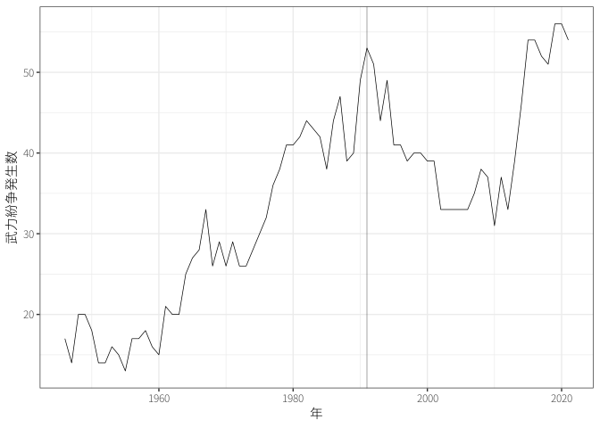
現代の武力紛争
政治学入門
導入
- 現代の武力紛争の特徴はなにか？
武力紛争を定義し、データセットを構築
UCDP defines state-based armed conflict as: “a contested incompatibility that concerns government and/or territory where the use of armed force between two parties, of which at least one is the government of a state, results in at least 25 battle-related deaths in a calendar year.”
課題文献
- 戦争のデータ
- 多湖 (2020, 序章)
1 武力紛争の頻度
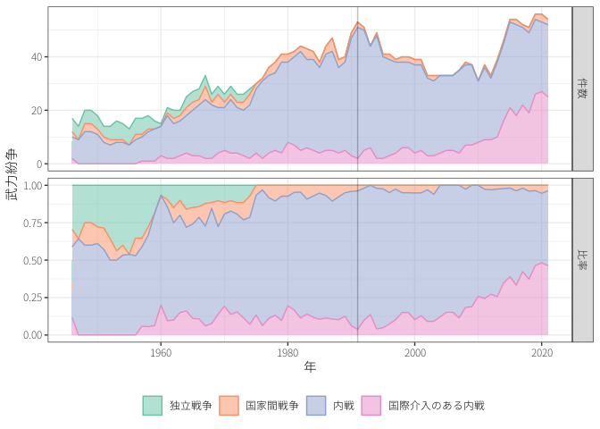
Correlates of War (COW) のデータ(Palmer ほか 2022)
- No militarized action
- Threat to use force
- Display use of force
- Use of force, War
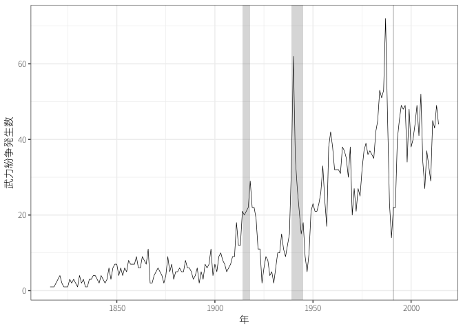
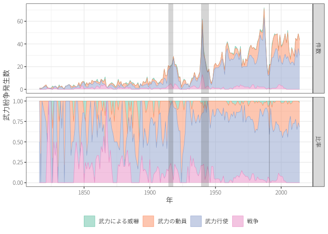
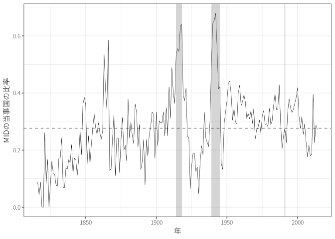
2 武力紛争の空間

3 武力紛争の理由
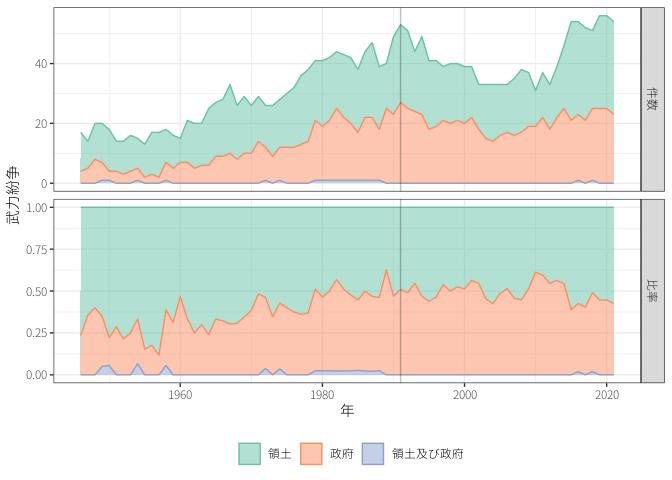
4 武力紛争の被害
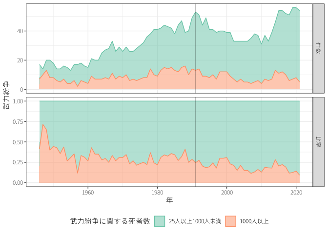
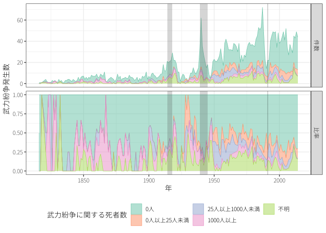
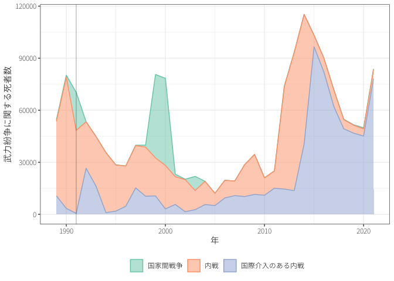
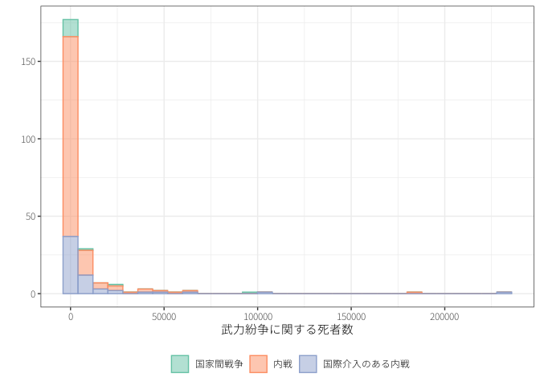
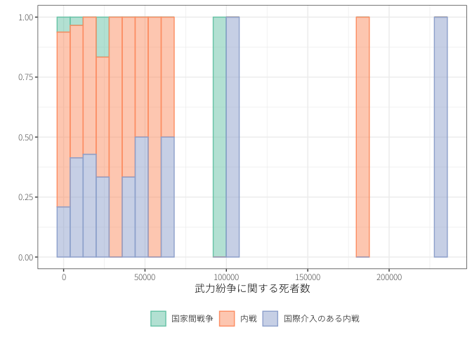
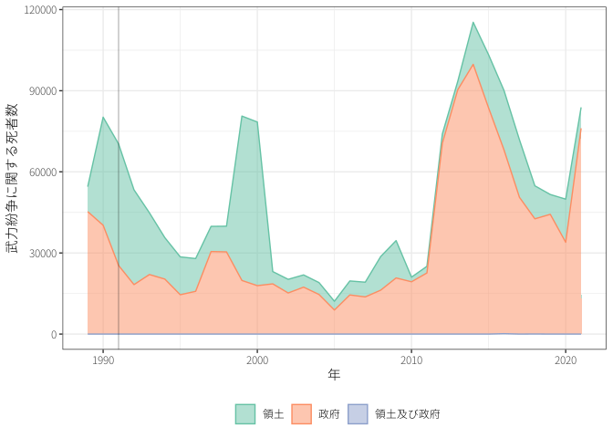
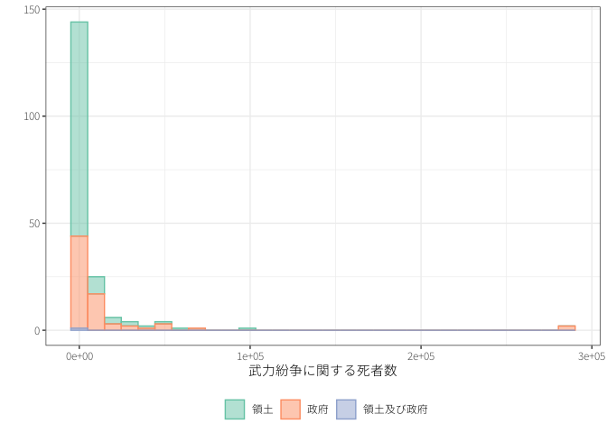
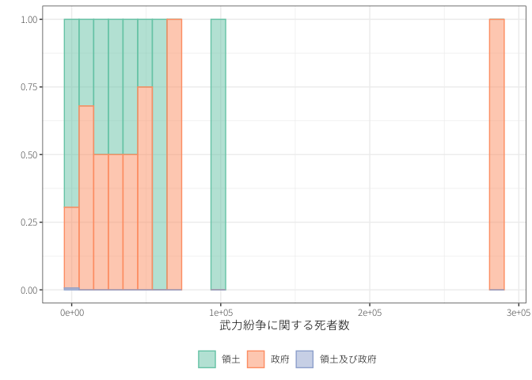
5 武力紛争の期間
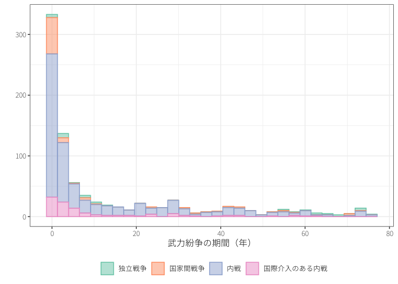
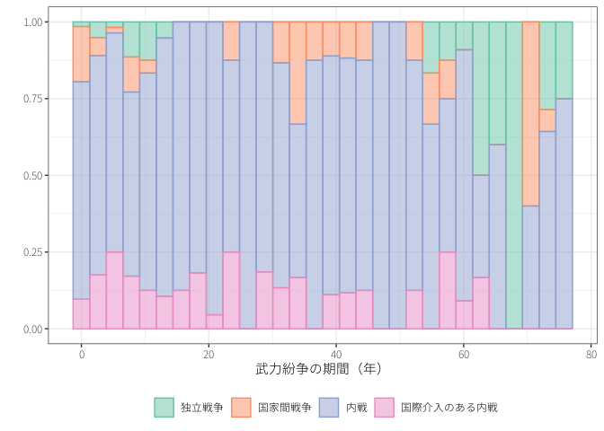
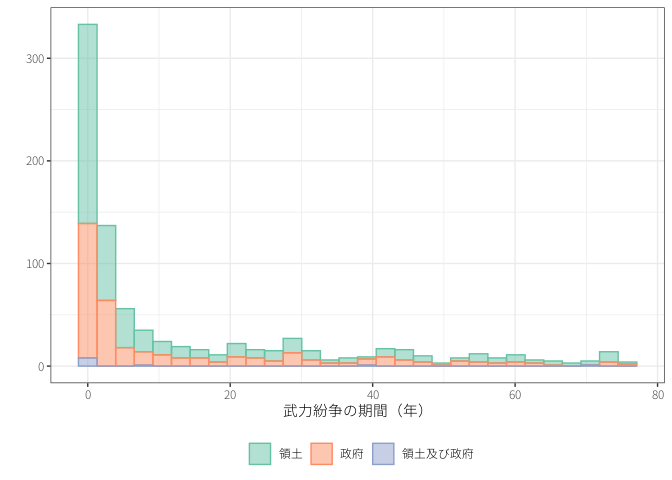
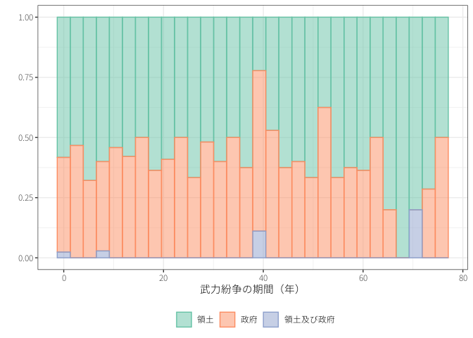
6 武力紛争の帰結
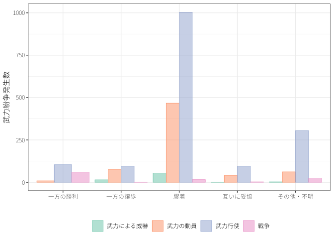
参考文献
Miller, Charles, と K Shuvo Bakar. 2023. 「Conflict events worldwide since 1468BC: Introducing the historical conflict event dataset」. Journal of Conflict Resolution 67 (2-3): 522–54.
Palmer, Glenn, Roseanne W McManus, Vito D’Orazio, Michael R Kenwick, Mikaela Karstens, Chase Bloch, Nick Dietrich, Kayla Kahn, Kellan Ritter, と Michael J Soules. 2022. 「The MID5 Dataset, 2011–2014: Procedures, coding rules, and description」. Conflict Management and Peace Science 39 (4): 470–82.
多湖淳. 2020. 戦争とは何か : 国際政治学の挑戦. 中公新書. 中央公論新社.